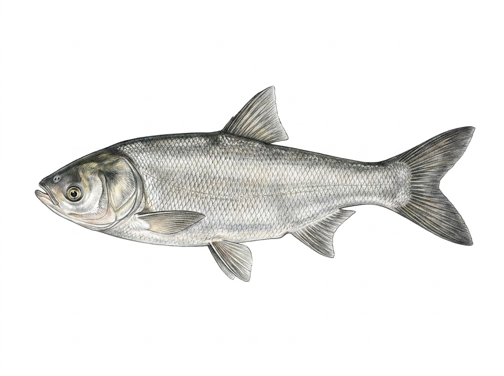

Silver Carp
Hypophthalmichthys molitrix
The Silver Carp is a large freshwater fish introduced to Sri Lanka for aquaculture and inland fisheries. Originally native to eastern Asia, it is now found in reservoirs, lakes, irrigation tanks, and slow-moving rivers across the island. It prefers open waters with abundant plankton and thrives in large freshwater bodies with warm temperatures. This fast-growing species is a filter feeder, swimming with its mouth open to consume phytoplankton, zooplankton, and other microscopic organisms suspended in the water. Unlike many carps, it does not feed on the bottom but spends most of its time in the middle and upper water layers. Silver Carp are generally found in schools and are capable of rapid growth under favourable conditions. In Sri Lanka, the Silver Carp is widely cultured because of its fast growth rate and value as a food fish. However, as an introduced species, it can compete with native plankton-feeding fishes for food and may alter the natural balance of freshwater ecosystems if populations become excessive.